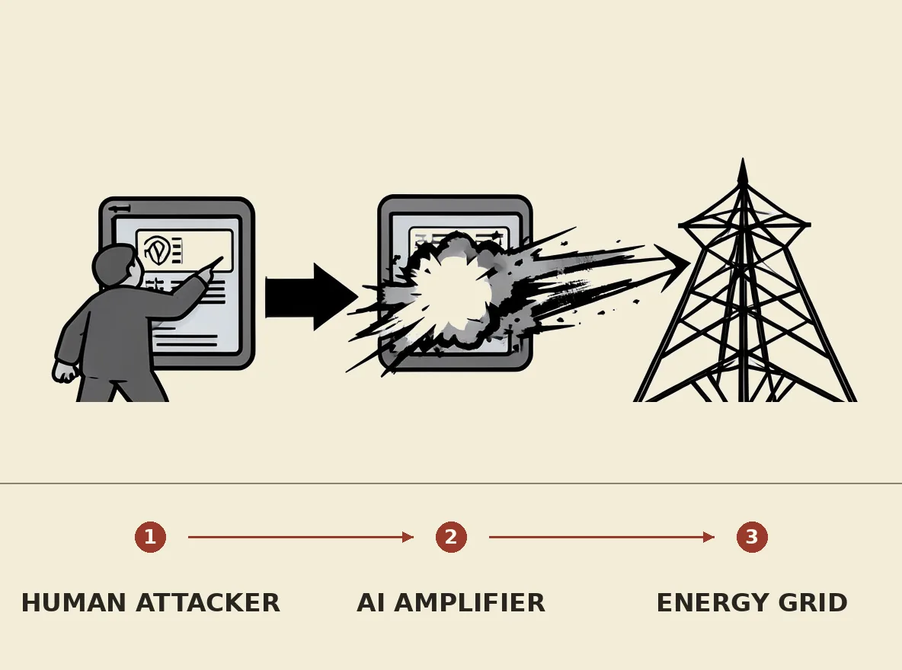

Cybersecurity experts are more concerned about human attackers leveraging artificial intelligence to target energy systems than about rogue AI agents acting autonomously. Critical energy infrastructure, including power plants and nuclear reactors, was not designed with internet connectivity or modern cybersecurity risks in mind, making it inherently vulnerable. The integration of AI acts as a "force multiplier," empowering malicious human actors to exploit these existing vulnerabilities more effectively, posing a growing threat to essential services like electricity and healthcare.